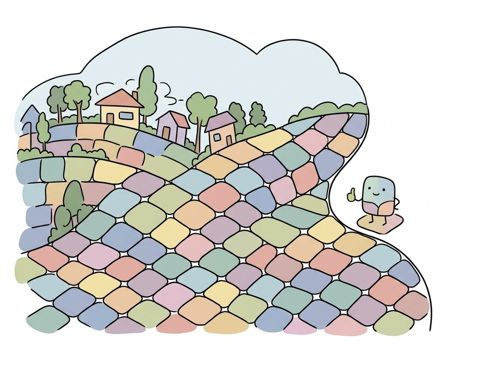

"I don't do objects. I do neighborhoods. Five hundred tidy, compact neighborhoods, each one sworn never to straddle an edge. Assembling your cat out of them is, respectfully, an exercise for the reader."
A Scrupulously Compact Superpixel With Boundary Adherence Issues
Superpixels turn the whole segmentation question upside down: instead of trying to cut the image into the right regions, cut it into far too many regions, deliberately, and make every one of them small, compact, and obedient to edges. Each previous section of this chapter chased the correct partition and failed in a characteristic way. Superpixels stop chasing. An oversegmentation into a few hundred edge-respecting cells almost never crosses a true object boundary, so any correct segmentation can still be assembled from it later, by a region-merging pass, a graph cut, a CRF, or a neural network. The reward is enormous: a one-megapixel image becomes a few hundred perceptually meaningful units instead of a million raw pixels, shrinking every downstream computation by three to four orders of magnitude. SLIC, the method this section centers on, delivers that for the price of a localized K-Means, the very algorithm that opened this chapter, now wearing a spatial leash.
In the previous section, graph cuts gave us globally optimal binary masks and Felzenszwalb gave us fast unsupervised regions, both paying in either computation or raggedness. This section completes the chapter with the pragmatist's move, and it is the most counterintuitive idea in it: the way to win the segmentation game is to stop playing it. Rather than demand that an algorithm find objects, we ask only that it find pieces of objects: an oversegmentation whose atoms are small enough to never span two things, regular enough to behave like a coarse pixel grid, and cheap enough to compute in a single pass. The idea closes the loop with Section 11.1: the position-weighted K-Means you built there as an exercise is, almost line for line, the SLIC algorithm that became the most cited superpixel method in computer vision.
1. Why Oversegment on Purpose Basic
The term superpixel names a small, connected, roughly homogeneous group of pixels intended as an intermediate representation: bigger than a pixel, far smaller than an object. The contract a good superpixel method signs has three clauses (the illustration below captures the tidy, edge-respecting neighborhoods this contract aims for):

- Boundary adherence. Superpixel borders should coincide with true image edges wherever true edges exist. An object boundary missed at this stage is unrecoverable: no later merging step can split a superpixel that leaked across it.
- Compactness and regularity. Superpixels should be approximately equal-sized blobs on an approximately regular lattice, so that downstream code can treat them like a coarse, content-aware pixel grid with predictable neighborhood structure.
- Speed. A preprocessing stage that is slower than the processing it accelerates is a net loss. The methods that survived in practice run in linear or near-linear time.
Why is this contract worth signing? Count what it buys. A $1000 \times 1000$ image has $10^6$ pixels; a pairwise affinity matrix over them has $10^{12}$ entries, which is why the spectral methods touched on in Section 11.4 strain at full resolution. The same image carved into 500 superpixels has a $500 \times 500$ affinity matrix: about four million times smaller. Every grouping algorithm in this chapter, region merging from Section 11.2, graph cuts from Section 11.4, becomes interactive when its nodes are superpixels instead of pixels. The price is the quantization risk named in the first clause, which is why boundary adherence is the metric every superpixel paper leads with.
Pixels date to the 1960s, but "superpixel" only entered the vision vocabulary in 2003, when Ren and Malik needed a word for the oversegmented atoms they fed to a classifier in "Learning a Classification Model for Segmentation." The concept caught on faster than the normalized-cut machinery they used to compute it: their superpixels took minutes per image, and most of the decade that followed was a search for the same atoms at a thousandth of the cost. SLIC, in 2012, ended the search for most practical purposes.
2. SLIC: K-Means on a Leash Intermediate
SLIC (Simple Linear Iterative Clustering, Achanta et al., 2012) is exactly the clustering of Section 11.1 in the five-dimensional feature space $(L, a, b, x, y)$, with two small modifications that change everything. To make $k$ superpixels from $N$ pixels, SLIC first seeds cluster centers on a regular grid with spacing
$$S = \sqrt{N / k},$$
nudging each seed to the lowest-gradient pixel in its $3 \times 3$ neighborhood so that no seed starts on an edge (the image gradients of Chapter 9 doing quiet service here). Then comes the first modification: during the assignment step, each center only considers pixels inside a $2S \times 2S$ window around itself. A pixel is therefore examined by a handful of nearby centers rather than all $k$ of them, and the cost of one iteration drops from $O(Nk)$ to $O(N)$. That bounded window is the leash, and it is what the L in SLIC ("linear") celebrates. Figure 11.5.1 contrasts the two search patterns.
The second modification is the distance measure. Color difference and spatial difference live in incommensurable units, so SLIC normalizes the spatial term by the grid spacing $S$ and scales it by a user-chosen compactness $m$:
$$d_c = \sqrt{(L_j - L_i)^2 + (a_j - a_i)^2 + (b_j - b_i)^2}, \qquad d_s = \sqrt{(x_j - x_i)^2 + (y_j - y_i)^2},$$
$$D = \sqrt{d_c^2 + \left(\frac{d_s}{S}\right)^2 m^2}.$$
Dividing $d_s$ by $S$ makes the spatial term dimensionless ("how many grid cells away is this pixel?"), so a single $m$ behaves consistently across image sizes and superpixel counts. Large $m$ makes spatial distance dominate and superpixels stay nearly square; small $m$ lets color dominate and superpixels grow tentacles that follow edges. Five to ten iterations of assign-then-update suffice; the centers barely move after that.
The algorithm is compact enough to build honestly from scratch. The implementation below follows the paper: grid seeding with gradient-aware perturbation, windowed assignment under the distance $D$, and a mean update, all in plain NumPy on top of the CIELAB conversion.
import cv2
import numpy as np
def slic_from_scratch(img_bgr, k=200, m=10.0, n_iter=10):
lab = cv2.cvtColor(img_bgr, cv2.COLOR_BGR2LAB).astype(np.float64)
H, W = lab.shape[:2]
N = H * W
S = int(np.sqrt(N / k)) # grid spacing between seeds
# 1. Seed on a regular grid, then nudge each seed to the lowest-gradient
# pixel in its 3x3 neighborhood so no seed starts on an edge.
gy, gx = np.gradient(lab[..., 0])
grad_mag = gy**2 + gx**2
centers = []
for y in range(S // 2, H, S):
for x in range(S // 2, W, S):
y0, y1 = max(y - 1, 0), min(y + 2, H)
x0, x1 = max(x - 1, 0), min(x + 2, W)
dy, dx = np.unravel_index(np.argmin(grad_mag[y0:y1, x0:x1]),
(y1 - y0, x1 - x0))
cy, cx = y0 + dy, x0 + dx
centers.append([*lab[cy, cx], cy, cx]) # [l, a, b, y, x]
centers = np.array(centers)
labels = -np.ones((H, W), dtype=np.int32)
yy, xx = np.mgrid[0:H, 0:W].astype(np.float64)
for _ in range(n_iter):
dists = np.full((H, W), np.inf)
# 2. Assignment: each center claims pixels only inside its 2S x 2S
# window. This bounded search is what makes SLIC O(N), not O(N*k).
for ci, (l, a, b, cy, cx) in enumerate(centers):
y0, y1 = int(max(cy - S, 0)), int(min(cy + S + 1, H))
x0, x1 = int(max(cx - S, 0)), int(min(cx + S + 1, W))
win = lab[y0:y1, x0:x1]
dc2 = ((win - np.array([l, a, b]))**2).sum(axis=2)
ds2 = (yy[y0:y1, x0:x1] - cy)**2 + (xx[y0:y1, x0:x1] - cx)**2
D = np.sqrt(dc2 + (m / S)**2 * ds2) # the SLIC distance
closer = D < dists[y0:y1, x0:x1]
dists[y0:y1, x0:x1][closer] = D[closer]
labels[y0:y1, x0:x1][closer] = ci
# 3. Update: move each center to the mean of its assigned pixels.
for ci in range(len(centers)):
mask = labels == ci
if mask.any():
centers[ci, :3] = lab[mask].mean(axis=0)
centers[ci, 3] = yy[mask].mean()
centers[ci, 4] = xx[mask].mean()
return labels
img = cv2.imread("scene.jpg") # e.g. 640 x 480
labels = slic_from_scratch(img, k=200, m=10.0)
n_sp = labels.max() + 1
print("superpixels:", n_sp, " mean pixels per superpixel:",
round(img.shape[0] * img.shape[1] / n_sp))
# superpixels: 192 mean pixels per superpixel: 1600That omission matters in practice. Because the distance $D$ can occasionally let a far pixel beat a near one, a few labels end up as disconnected crumbs, the same speckle disease diagnosed in Section 11.1, in miniature. Production SLIC finishes with a connected-components sweep (the machinery of Chapter 6) that relabels any fragment smaller than a threshold into its dominant neighbor. The library version does this for you, along with everything else.
The fifty-line implementation above, plus the connectivity pass it skips, plus the Lab conversion, collapses to a single call in scikit-image:
from skimage import io, segmentation
img = io.imread("scene.jpg") # RGB uint8
labels = segmentation.slic(img, n_segments=200, compactness=10,
enforce_connectivity=True) # SLIC in one line
viz = segmentation.mark_boundaries(img, labels) # overlay for inspection
print("superpixels:", labels.max())
# superpixels: 194mark_boundaries producing the standard mosaic visualization used in every superpixel figure you have ever seen.That is a roughly 50-to-1 line reduction. Internally the library handles the RGB-to-CIELAB conversion and its float scaling traps, the gradient-aware seed perturbation, the bounded-window assignment in compiled Cython, the post-hoc connectivity enforcement, optional Gaussian pre-smoothing via sigma, masked SLIC for regions of interest, and even slic_zero, the parameter-free SLICO variant that adapts compactness per superpixel.
Strip away the acronym and SLIC makes exactly two changes to the K-Means segmentation that opened this chapter: it normalizes the spatial coordinates by the seed spacing $S$ so that one compactness number works at any scale, and it forbids each center from looking beyond $2S$. The first change turns an arbitrary feature weighting into a meaningful dial; the second simultaneously buys linear time and guarantees regularity, because a center physically cannot claim territory far from its grid cell. The deepest lesson of the algorithm is that a well-chosen restriction can be a feature: by searching less, SLIC produces a more useful answer. Constraints as regularizers will return as a design theme when we reach the inductive biases of convolutional networks in Chapter 19.
3. The Compactness Dial Intermediate
Every superpixel method exposes some version of the same trade, and in SLIC it is the single number $m$. The two clauses of the superpixel contract pull in opposite directions: boundary adherence wants superpixels to chase edges wherever they wander, regularity wants them to stay home. Figure 11.5.2 sketches the two extremes. At $m$ near 1, superpixels in textured areas dissolve into irregular shapes that hug every contour, great for boundary recall, miserable for any algorithm that expected blob-like atoms with stable neighborhoods. At $m$ of 40 and beyond, the lattice barely deforms; you get beautiful near-hexagonal tiles that slice straight through low-contrast object boundaries. The standard default of $m = 10$ (with CIELAB color) is the published sweet spot, but the right value is downstream-dependent: a labeling tool wants adherence, a tracking system wants stability.
The field quantifies this trade with two standard metrics. Boundary recall asks: what fraction of ground-truth boundary pixels lie within a small distance (usually 2 pixels) of some superpixel boundary? Higher is better, and more superpixels make it easier. Undersegmentation error measures the total leakage: for each ground-truth region, how many pixels of the overlapping superpixels spill outside it? The sweep below makes the dial concrete by measuring how the superpixel count and total boundary length respond to $m$.
from skimage import io, segmentation
import numpy as np
img = io.imread("scene.jpg")
for m in (1, 10, 40):
labels = segmentation.slic(img, n_segments=250, compactness=m)
walls = segmentation.find_boundaries(labels).sum() # total wall pixels
sizes = np.bincount(labels.ravel())
print(f"m={m:>3} superpixels={labels.max():4d} wall pixels={walls:6d}"
f" size spread (std/mean)={sizes.std()/sizes.mean():.2f}")
# m= 1 superpixels= 236 wall pixels= 31408 size spread (std/mean)=0.71
# m= 10 superpixels= 244 wall pixels= 26190 size spread (std/mean)=0.38
# m= 40 superpixels= 247 wall pixels= 24512 size spread (std/mean)=0.16The clean near-hexagonal mosaic that high compactness produces looks more "correct" than the ragged tiling of low compactness, so it is tempting to crank $m$ up. This inverts the actual quality measure. A superpixel exists to never straddle a true object boundary, and the regular high-$m$ tiles do exactly that: a cell that contains pixels from both sides of an edge (the circled cells in Figure 11.5.2) is mislabeled for some of its pixels, and because no later merge can split a superpixel, that error is permanent. Pretty tiling, baked-in leakage. The visually messier low-$m$ walls are usually the better superpixels, because they hug the edges that matter. Judge a superpixel map by boundary recall, not by how tidy the grid looks.
4. The Friends: Felzenszwalb, Quickshift & Compact Watershed Intermediate
SLIC won on the speed-regularity-adherence balance, but it has company, and the friends matter because each reuses an idea from earlier in this chapter at superpixel scale. The Felzenszwalb graph merging of Section 11.4, run at small scale, is itself a superpixel method: highly boundary-adherent, completely irregular, with region count controlled only indirectly. Quickshift (Vedaldi and Soatto, 2008) is a fast cousin of the Mean-Shift mode-seeking from Section 11.1: instead of iteratively climbing the density, each pixel links to its nearest neighbor with higher estimated density, and the resulting forest's trees are the superpixels. Compact watershed runs the flooding of Section 11.3 from a regular grid of markers, with a compactness term added to the flooding priority so basins stay blob-like; it is the fastest of the four. The comparison below runs all of them through scikit-image's uniform API.
from skimage import io, segmentation, filters, color
import numpy as np
img = io.imread("scene.jpg")
slic_l = segmentation.slic(img, n_segments=250, compactness=10)
felz_l = segmentation.felzenszwalb(img, scale=100, sigma=0.5, min_size=50)
quick_l = segmentation.quickshift(img, kernel_size=3, max_dist=6, ratio=0.5)
grad = filters.sobel(color.rgb2gray(img))
water_l = segmentation.watershed(grad, markers=250, compactness=0.001)
for name, L in [("SLIC", slic_l), ("Felzenszwalb", felz_l),
("Quickshift", quick_l), ("Compact watershed", water_l)]:
print(f"{name:>18}: {len(np.unique(L)):5d} segments")
# SLIC: 244 segments
# Felzenszwalb: 387 segments
# Quickshift: 1129 segments
# Compact watershed: 250 segmentsA practical selection rule: reach for SLIC by default; for compact watershed when generation time is the bottleneck (video, embedded); for Felzenszwalb when boundary adherence trumps everything and irregularity is acceptable; and for quickshift mainly when you also want its multiscale density structure. The 2018 benchmark by Stutz, Hermans, and Leibe (cited in this chapter's bibliography) remains the most thorough head-to-head and broadly supports this ordering, with SLIC variants sitting on the efficient frontier of recall versus runtime versus regularity.
An agritech startup needed pixel masks of weed patches in 10,000 drone orthophotos to train a sprayer-guidance model, and the quote from a labeling vendor for freehand polygon annotation came back at six figures. The machine-learning lead made a different bet: she preprocessed every image with SLIC at roughly 800 superpixels (compactness 8, chosen low because crop-weed boundaries are faint), then built a one-evening web tool where annotators clicked superpixels to toggle them weed or crop. A click labels hundreds of pixels at once, and because SLIC walls already followed the visible edges, annotators almost never needed pixel-level corrections.
Median annotation time fell from 11 minutes per image (polygons) to 74 seconds (superpixel clicking), a 9x speedup, and the project finished in-house in three weeks. Quality audits found the superpixel masks slightly more consistent than freehand polygons, because the same walls were offered to every annotator. The one regret: an early batch used compactness 25, and the too-regular tiles leaked across thin weed boundaries; those images had to be redone. The lesson is the section's lesson: the compactness dial is not cosmetic, it decides what the representation can and cannot express, and an oversegmentation error baked in at preprocessing time survives every later stage.
5. Superpixels as a Substrate: Graphs, CRFs & Tokens Advanced
Superpixels are a means, not an end; the payoff is what runs on top of them. The classical pattern is the region adjacency graph (RAG): one node per superpixel, one edge per pair of touching superpixels, weighted by feature dissimilarity. Every grouping algorithm in this chapter can now be re-run on a graph of hundreds of nodes instead of a million. The snippet below carries the chapter full circle: SLIC oversegments, a RAG built on mean colors recreates the affinity view of Section 11.4, and a threshold-based merge recovers a coarse segmentation in milliseconds.
from skimage import io, segmentation, graph
import numpy as np
img = io.imread("scene.jpg")
labels = segmentation.slic(img, n_segments=400, compactness=20)
rag = graph.rag_mean_color(img, labels) # node = superpixel, edge weight =
# mean-color distance of neighbors
merged = graph.cut_threshold(labels, rag, thresh=29) # merge similar neighbors
print(f"superpixels: {labels.max()} -> regions after RAG merge:"
f" {len(np.unique(merged))}")
# superpixels: 397 -> regions after RAG merge: 24skimage.graph). The whole pipeline, SLIC included, runs in well under a second: the speed dividend of doing the expensive reasoning on hundreds of nodes instead of a million pixels.The same substrate idea powered a decade of recognition systems: superpixel-wise features fed to classifiers, CRFs whose pairwise terms connected superpixels rather than pixels, and the object proposals (Selective Search, built on Felzenszwalb regions) that fed the first deep detectors you will meet in Chapter 23. Even interactive tools kept the trick: clicking superpixels, as in the practical example above, is the click-to-mask interaction that Chapter 24's promptable models later learn end to end. And when video arrives in Chapter 15, temporal superpixels extend the same economy across frames.
The Vision Transformer of Chapter 22 chops an image into square $16 \times 16$ patches, which is exactly the high-compactness failure of Figure 11.5.2: tokens that slice through object boundaries and mix content. A current research thread replaces the square grid with content-aware atoms. SuperPixel FCN and the differentiable Superpixel Sampling Networks (Jampani et al., 2018) made superpixel generation trainable end to end; SPFormer (Mei et al., 2024) builds a vision transformer whose tokens are superpixel representations rather than square patches; and "A Spitting Image" (Aasan et al., ECCV 2024 workshops) shows modular superpixel tokenization can drop into standard ViTs. The motivation is the one this section taught: a token that respects boundaries carries cleaner evidence than a token that straddles them. Meanwhile the strongest segmentation models, SAM and SAM 2 (2023-2024), abandoned explicit superpixels yet kept the contract, predicting masks that are connected, compact, and edge-adherent because their training data was. The atoms became implicit; the three clauses survived.
That completes the classical grouping toolkit: clustering without space, growing with space, flooding topography, cutting graphs, and finally oversegmenting on purpose. Each method encodes a different answer to the chapter's central question of how much global structure to buy with how much computation, and each survives somewhere in modern practice, most often as the fast, training-free stage in front of something learned. With the image now carved into meaningful regions, the natural next question is where those regions sit in space: Chapter 12: Camera Models & Calibration opens the geometric arc of Part II by formalizing how the 3D world projects onto the 2D grid we have spent this chapter partitioning, and how calibration recovers that mapping precisely.
Consider SLIC's distance $D = \sqrt{d_c^2 + (d_s/S)^2 m^2}$. (a) Explain why dividing $d_s$ by $S$ (rather than by a fixed constant) keeps the behavior of a given $m$ consistent when you change n_segments from 100 to 10,000 on the same image. (b) Describe the limiting segmentations as $m \to 0$ and $m \to \infty$, and name the section of this chapter each limit reproduces. (c) A colleague proposes setting $m$ per superpixel to the maximum $d_c$ observed in that cluster on the previous iteration. What problem is this solving, and what published SLIC variant mentioned in this section does it correspond to?
Take any image for which you can draw or obtain a ground-truth object mask. Implement boundary recall: dilate the superpixel boundary map by 2 pixels (Chapter 6 tools), then measure the fraction of ground-truth boundary pixels it covers. Evaluate slic, felzenszwalb, and compact watershed at matched segment counts of roughly 100, 300, and 1000 (tune parameters until counts match within 10 percent). Plot recall versus segment count for the three methods and report which wins at each budget.
Using the RAG-merge pipeline from this section, measure end-to-end runtime and final region quality (visually, or against a mask) as you vary the superpixel budget over {100, 400, 1600, 6400} on the same image. Separately, time graph.cut_threshold alone. Where does total runtime stop being dominated by SLIC and start being dominated by the graph stage? Write a short paragraph on how this scaling argument explains why pixel-level affinity methods like the normalized cuts of Section 11.4 are run on superpixels in practice, and what the equivalent token-budget argument looks like for the transformers of Chapter 22.